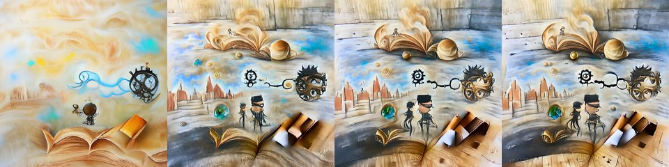

← Async Art — living works · all collections
by Mad Monk · Async Art Master #4598 · four-phase · time rule: UTC
Updates four times a day to reflect sunrise / day / sunset / night cycles.

Sunrise 06:00–06:59 · Day 07:00–17:59 · Sunset 18:00–18:59 · Night 19:00–05:59 (UTC)
The full-size files live on IPFS; each is linked on three public gateways, in the order to try them (gateway.pinata.cloud, ipfs.io, dweb.link). Every line says what our own check found: 5 we keep this file pinned, 1 our own copy, pinned here and verified on upload.
QmSxj6wnPqcSG8… gateway.pinata.cloud · ipfs.io · dweb.link — we keep this file pinned, checked 2026-09-24 11:46QmRHAUGrckkpKF… gateway.pinata.cloud · ipfs.io · dweb.link — we keep this file pinned, checked 2026-09-24 11:46Qmc1U4D3NBWvkP… gateway.pinata.cloud · ipfs.io · dweb.link — we keep this file pinned, checked 2026-09-24 11:46QmRK3WCBso4S7w… gateway.pinata.cloud · ipfs.io · dweb.link — we keep this file pinned, checked 2026-09-24 11:46bafybeidbbnfhv… gateway.pinata.cloud · ipfs.io · dweb.link — our own copy, pinned here and verified on upload, checked 2026-09-22QmVwZjPGHBBcrs… gateway.pinata.cloud · ipfs.io · dweb.link — we keep this file pinned, checked 2026-09-24 11:46QmRHAUGrckkpKF… gateway.pinata.cloud · ipfs.io · dweb.link — we keep this file pinned, checked 2026-09-24 11:46QmRHAUGrckkpKF… gateway.pinata.cloud · ipfs.io · dweb.link — we keep this file pinned, checked 2026-09-24 11:46QmRK3WCBso4S7w… gateway.pinata.cloud · ipfs.io · dweb.link — we keep this file pinned, checked 2026-09-24 11:46QmSxj6wnPqcSG8… gateway.pinata.cloud · ipfs.io · dweb.link — we keep this file pinned, checked 2026-09-24 11:46Qmc1U4D3NBWvkP… gateway.pinata.cloud · ipfs.io · dweb.link — we keep this file pinned, checked 2026-09-24 11:46Dover: Fresco Outside the Earth by Mad Monk Part of a three artwork series on Async Art Minted as a 4-piece artwork on Async Art, 2022 ... The piece is a human AI collaboration based on manipulated text input inspired by Mary Ruefle's poem Seven Postcards from Dover. "The teacher said inner truth and the chalk said like a fresco inside the earth that no one has ever seen and one day decides to be discovered and begins to breathe— do you know what that means?" --- excerpt from Mary Ruefle's poem Seven Postcards from Dover
async.art · OpenSea · Etherscan
Generated archive pages. Content identifiers point to the public IPFS network.